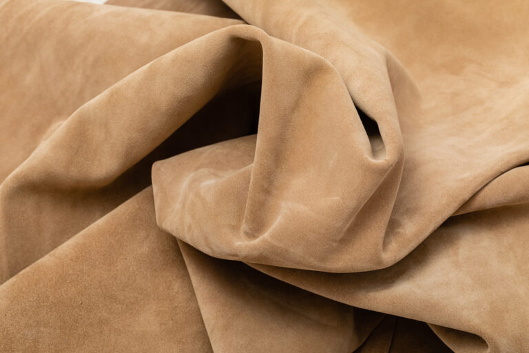

exhibit-nubuck
ヌバックレザーの解説ページ
ヌバックとは
- ヌバックは、牛革の表面を細かく削って微起毛にした、マットで上品な質感の革です。
- スエード（裏面起毛）よりキメが細く、やや丈夫。詳しくは下の「特徴お手入れ」へ。
- ヌバックは、牛革の表面を細かいサンドペーパーで丁寧に削って仕上げた、やわらかく上品な質感の革です。
- 表面が短く起毛しており、しっとりとした手触りとマットな風合いが特徴です。
- 名称の由来：雄鹿革を同様に仕上げた「バックスキン」に似ていることに由来するといわれています。
特徴
- 軽くて柔らかく、手になじむ感触
- 使い込むほどに風合いが増すエイジング
- 高級感があり、靴バッグ小物などに広く使用
用途
- バッグや小物（財布、キーケース）
- 靴（レザーシューズ、ワークブーツ、登山靴）
- アクセサリー（時計ベルト、手袋）
- アパレル（ジャケット）
お手入れ
- ヌバックは水や汚れに弱いため、防水スプレーの使用がおすすめです。
- ブラシで優しくほこりを落とすだけでも、美しい質感が長持ちします。
ワンポイント
- ヌバックは「スエード」と似ていますが、スエードが裏面から起毛しているのに対し、ヌバックは表面を起毛させています。
Overview
- Nubuck is a type of leather made by finely sanding the grain side of cowhide to raise a delicate nap, giving it a matte, refined look.
- Compared with suede (nap raised from the flesh side), it has a finer texture and is slightly more durable. See "Features" and "Care" below for details.
- It is carefully finished with fine sandpaper for a soft, elegant hand feel.
- The surface has a short nap, offering a smooth, slightly velvety touch and a matte appearance.
- Etymology: The name is said to derive from its resemblance to deer "buckskin" finished in a similar way.
Features
- Lightweight and supple with a comfortable feel
- Ages beautifully over time, developing a rich patina
- Often used in premium shoes, bags, and accessories
Uses
- Bags and small leather goods (wallets, key cases)
- Shoes and boots (including work and hiking boots)
- Accessories (watch straps, gloves)
- Apparel (jackets)
Care
- Nubuck is sensitive to water and stains, so apply a waterproof spray before use.
- Gently brushing off dust will help maintain its texture and appearance.
Tips
- Although similar to suede, nubuck is sanded on the grain side (outside), while suede is made from the flesh side (inside).